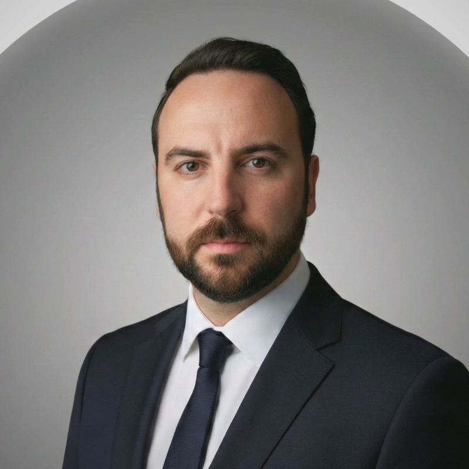

1.8M sqft across nine buildings, 690 residences — team lead on three towers at the heart of Wisconsin Avenue's transformation.
Cathedral, parish, school and cultural hall on the Seine — envelope and exterior works, concept through construction.
Full SD through CA delivery of a flagship campus for one of the world's largest privately held companies.
Competition winner. Hybrid steel-and-glulam roof with ETFE cladding — full delivery from concept through construction site.
Three 295-ft towers — residential, office and retail — over a shared podium integrated with the Purple Line Bethesda terminus.
A new nerve centre for the Scuderia — race strategy, engineering and hospitality under a precision-detailed envelope.
Competition-winning HQ and hotel — BREEAM Very Good and LEED Gold, 39,000 m², from concept through permit.
A 32-storey luxury tower in Harwood Village — 158 apartments draped across 7,500 m² of cascading planted terraces.

Nicolas Lundström is a registered architect currently serving as Executive Associate at Shalom Baranes Associates in Washington, D.C. His practice spans mixed-use high-rise, cultural institutions, corporate campuses and major stadia across the United States, France, Italy, Russia and China.
Over nine years at Shalom Baranes, he has led teams on some of the Washington region's most significant recent developments — City Ridge, The Elm & The Wilson, and the MARS Inc. global headquarters. Before that, as Senior Project Architect at Wilmotte & Associés in Paris, he delivered the Allianz Riviera stadium, the Russian Orthodox Cultural Centre on the Quai Branly, the Ferrari F1 Sport Management Centre in Maranello, and the SMABTP headquarters competition win.
Trained at The Bartlett School of Architecture, UCL (M.Arch.) and Oxford Brookes University (B.Arch. Hons), with formative experience at CZWG London, Arte Charpentier Shanghai, and Elizabeth de Portzamparc. He works in English, French and Italian.
For project enquiries, references, or a portfolio of detailed drawings —
nlundstrom@